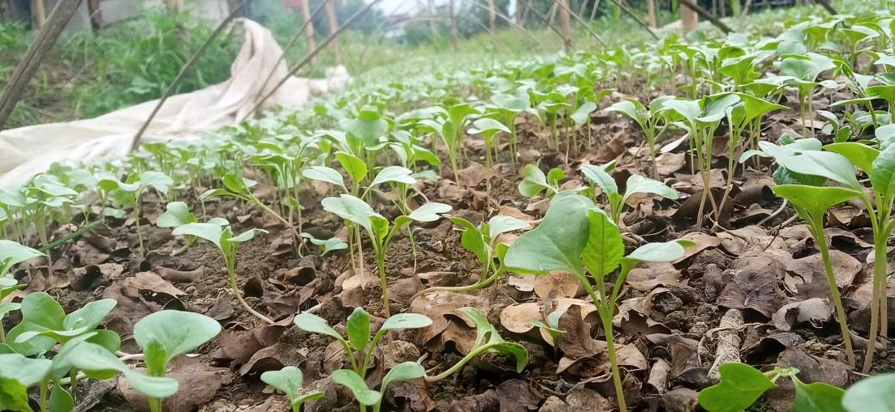

Mid-Rainy Nursery: Baby Cauliflower
The monsoon season has arrived at Swasti Farm, right here in Charaundi, Bagmati Province, Nepal, and it's a truly amazing time! The brown earth turns into a vibrant, lush greenery. Everywhere you look, there's new life bursting forth, watered by the gentle, often heavy, rain. The air feels fresh and clean, and there's a unique smell of wet soil and growing plants. This time of year fills us with a lot of joy because we see nature working its magic, making everything grow. But even with all this beauty, the monsoon also brings a big job for us: protecting our very tiny, very delicate baby cauliflower plants. These little seedlings are like newborns; they need constant care and a safe place to grow strong, especially when the rain comes down with full force. We know they are vulnerable, so our main focus is to give them the best start possible so they can thrive and eventually become the big, beautiful cauliflowers you see on our farm.
To make sure our baby cauliflowers are safe from the monsoon's challenges, we built a special home just for them, which we call our nursery. We started this on July 1st, 2025. Think of this nursery as a cozy, protected haven for our young plants. Why is it so important? Well, the monsoon rains can be incredibly strong, almost like a waterfall! If these tiny seedlings were directly exposed to such heavy downpours, they could easily be washed away or damaged beyond repair. Also, too much water can be harmful in another way: it can lead to diseases that make the plants sick, just like too much cold and wet can make us feel unwell. So, our nursery acts like a shield, giving them a controlled environment where they can grow without fear of the harsh elements. It's a place where we can keep a close eye on each little plant, making sure it gets exactly what it needs to develop properly. This careful beginning is key to ensuring a healthy harvest later on.
Inside our special nursery, we use some very clever and simple ways to protect our baby cauliflowers. We have a mix of plastic sheets and cloth sheets, and each one plays a crucial role. The plastic sheets are like strong, transparent umbrellas for our plants. When the sky opens up and the rain pours down, these plastic covers block the water from hitting the delicate seedlings directly. This prevents them from being drowned or washed away, and it also stops too much moisture from collecting around their tiny roots, which could lead to rot. But it's not just about rain; sometimes, after a heavy shower, the sun comes out strong, and it can get very hot. That's where the cloth sheets come in. These cloth covers act as natural sunshades, protecting the young plants from getting too much direct sunlight and heat. This keeps them cool and prevents them from wilting or getting stressed. By using both plastic for rain and cloth for shade, we create a perfectly balanced environment. We check on them every single day, adjusting the covers as needed, making sure they are always comfortable. This constant care helps our small cauliflower seedlings grow into robust plants, ready to be moved to the open fields and continue their journey to become the fresh, delicious vegetables you expect from Swasti Farm.